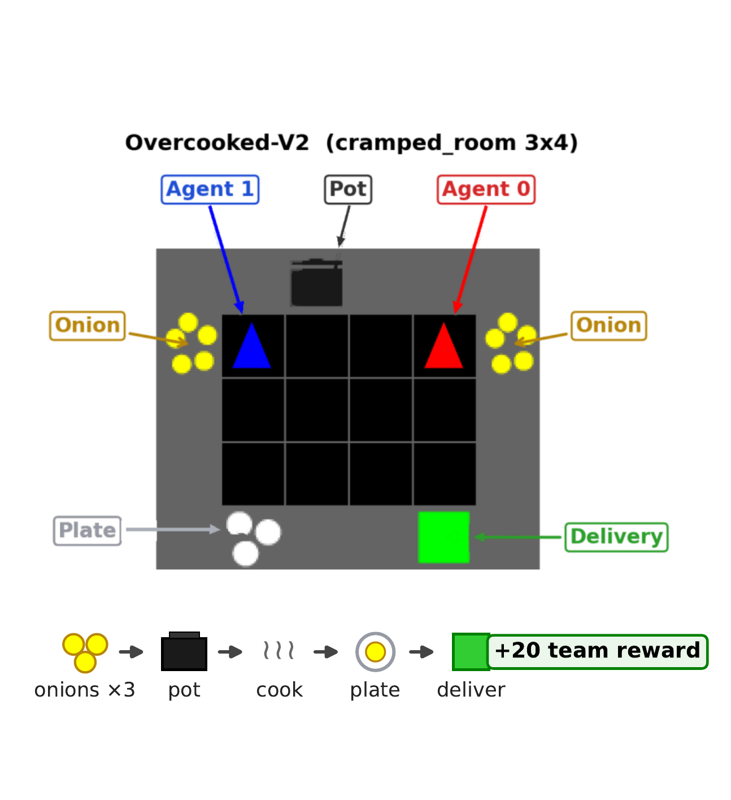
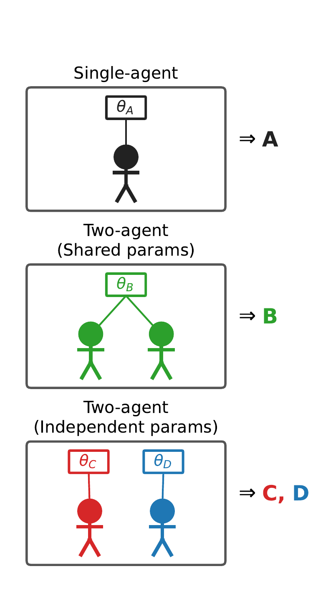
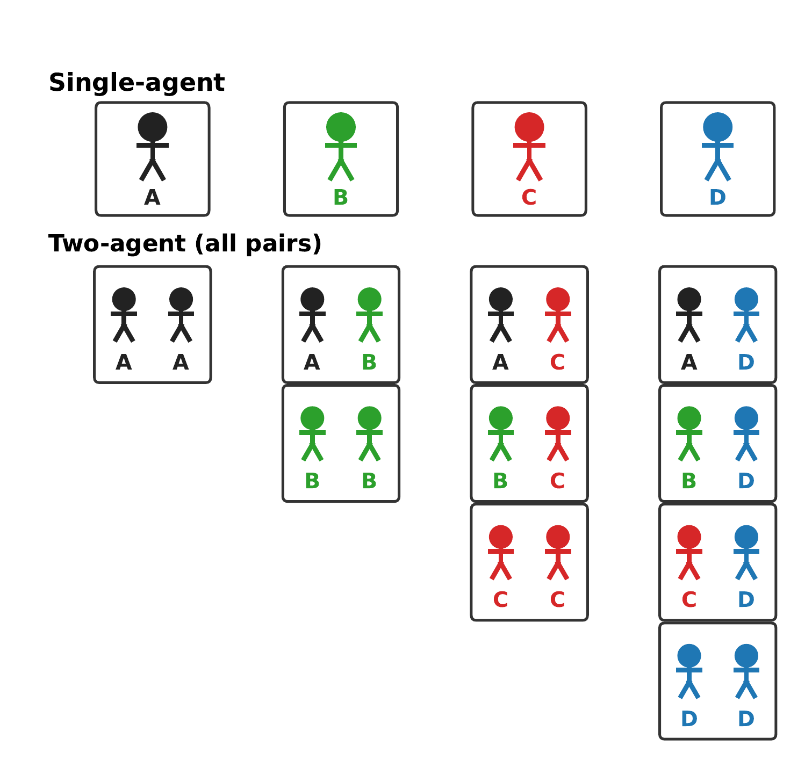

Agent-Centric Analysis of
Role Specialization and
Cooperative Behavior in
Multi-Agent Reinforcement Learning
Institute of Science Tokyo
PRIMA 2026 — 27th International Conference on Principles and Practice of Multi-Agent Systems Kumamoto, Japan · December 14–17, 2026 Springer Lecture Notes in Artificial Intelligence (to appear)
Abstract
We investigate how training regimes affect cooperative agent behavior under agent-centric observations. In the Overcooked-V2 cooking task, we trained agents under three regimes: single-agent training, two-agent training with shared policy parameters, and two-agent training with independent policy parameters. We evaluated all possible pairings between trained agents. The policy from single-agent training achieved the highest reward in single-agent evaluation, but two such policies interfered with each other in two-agent evaluation. Shared-parameter pairs achieved the highest team reward among all two-agent pairings and maintained stable performance with different partners. Independent-parameter pairs showed clear role specialization, but their performance decreased when paired with different agents. These results show that cooperative behavior and role specialization are shaped by the training regime and by whether the partner was encountered during training.
Experimental Setup



Results
- Asingle-agent training
- Btwo-agent training with shared policy parameters
- C, Dtwo-agent training with independent policy parameters (player 0, player 1)
Table 1. Team reward (mean ± std) in the evaluation matrix. Rows and columns indicate agent types.
| A | B | C | D | ||
|---|---|---|---|---|---|
| single-agent | 397.0 ± 44.2 | 113.4 ± 113.9 | 34.2 ± 88.8 | 26.4 ± 90.9 | |
| two-agent | A | 35.6 ± 29.9 | 97.4 ± 58.9 | 92.2 ± 57.6 | 102.8 ± 64.0 |
| B | 374.4 ± 102.6 | 241.8 ± 124.1 | 248.4 ± 132.9 | ||
| C | 194.7 ± 183.3 | 170.9 ± 179.6 | |||
| D | 188.1 ± 191.1 | ||||
Citation
@inproceedings{kuwano2026agentcentric,
title = {Agent-Centric Analysis of Role Specialization and Cooperative
Behavior in Multi-Agent Reinforcement Learning},
author = {Kuwano, Hiroki and Tanaka, Masayuki and Yoshida, Takako},
booktitle = {PRIMA 2026: Principles and Practice of Multi-Agent Systems},
series = {Lecture Notes in Artificial Intelligence},
publisher = {Springer},
year = {2026}
}